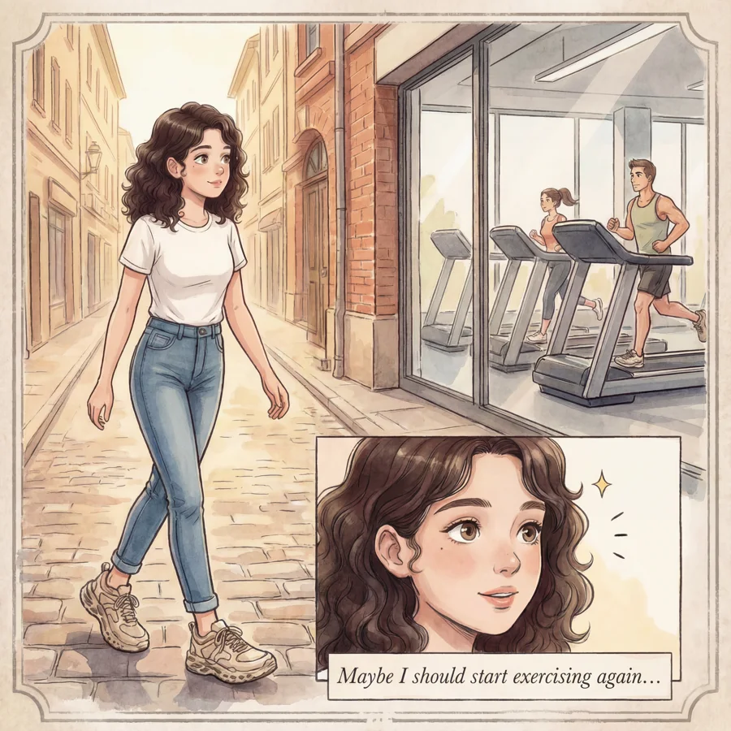
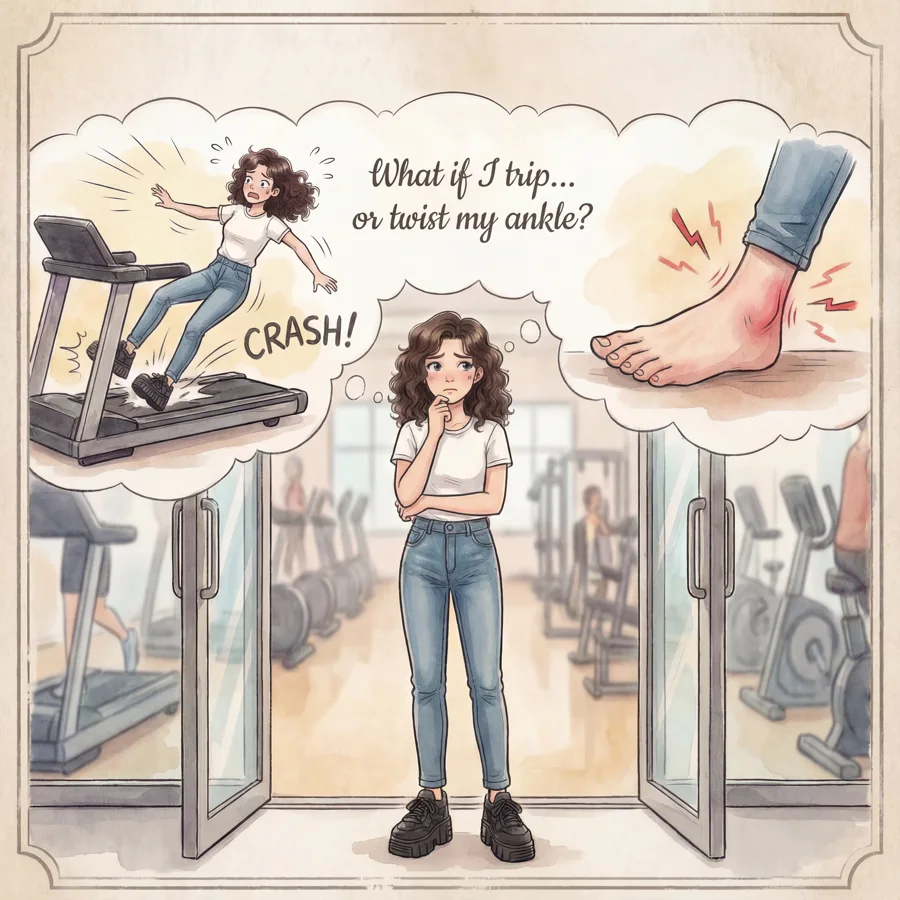
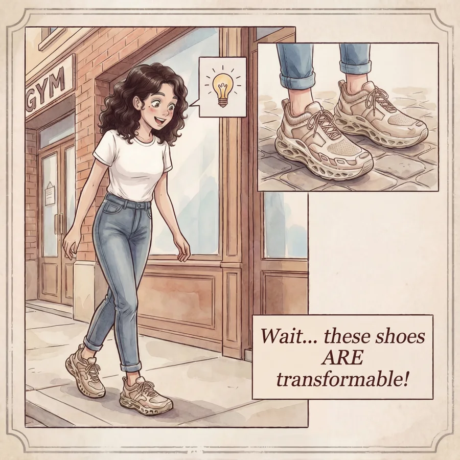
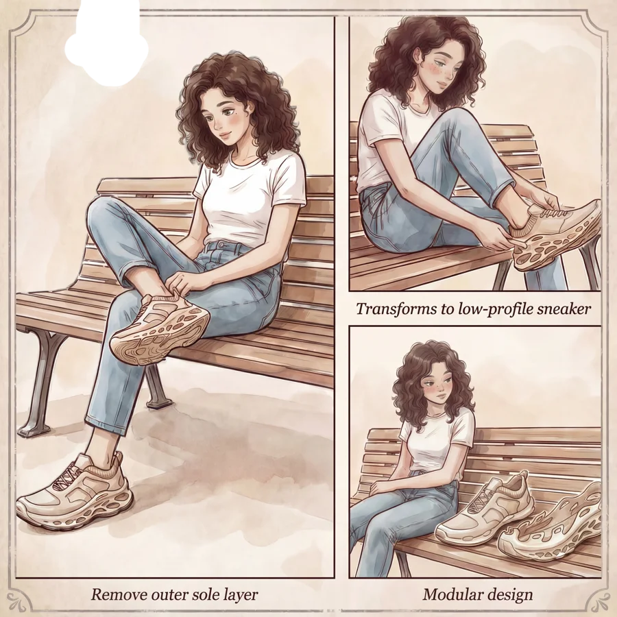
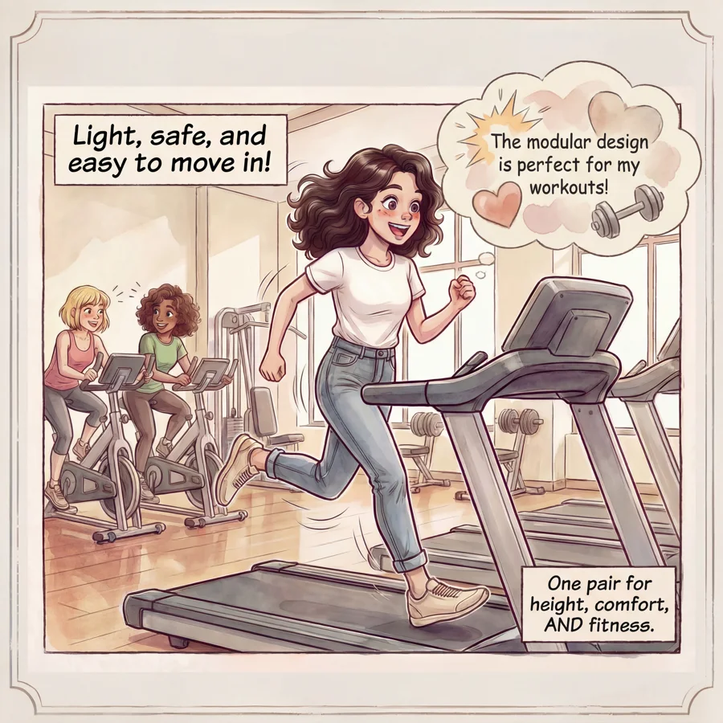
Case study 02 · Footwear · Product & brand
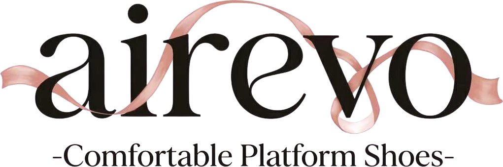
Elevate your every step.
A transformable platform sneaker that gives a visible 5 cm lift without trading away all-day comfort, stability or a light step.

I wear height-increasing shoes most days. They make me look taller, but the soles are heavy and stiff, and by the end of the day my feet ache and my posture feels wrong.
Most height-boosting footwear is designed for appearance first and comfort second. That raised the question behind airevo: how might we make height-increasing shoes that feel natural, light and ergonomic, instead of making people trade health for height?
Three sources: my own experience, social listening, and what people search for. A Google search for “platform shoes” immediately suggests “platform shoes uncomfortable” and “are platform shoes bad for your feet?”. In a Reddit thread on platform shoes, I coded each comment for complaints and wishes: most were about weight, stiff soles, instability and a chunky look, while people still asked for 2–3 inches of height with all-day comfort.
“I couldn’t bend my feet as much as in non-platform shoes, and they also feel heavy.”Online comment, social listening
I couldn’t bend my feet as much as non-platform shoes.
They’re always very heavy, not to mention how often you roll your ankle.
Can we make use of the extra space in the sole?
Aim: a lightweight, transformable platform shoe system that lets young urban women switch between a stable height-boost mode and a low-profile daily mode, with better proportions, all-day comfort and less foot fatigue.
| Requirement | Why | Specification |
|---|---|---|
| All-day comfort | Feet get sore after a few hours in platform mode. | Zoned insole: soft heel and forefoot, firmer arch. Flex grooves under the forefoot. |
| Stability | Added height feels wobbly on stairs and uneven pavements. | Flared heel, anti-slip tread, rigid heel counter. A flat platform instead of a sloped one. |
| Transformation | If switching is slow or confusing, people stop using it. | Tool-free lock, ≤ 30 s per shoe, with a clear click when locked. |
| Lightweight | Heavy soles tire you on stairs and long walks. | EU 38: ≤ 350 g platform mode, ≤ 280 g flat mode. Hollow midsole. |
| Style | Bulky or unnatural shoes don’t get worn. | Minimal upper for office, casual and date outfits. Nude palette. 30–50 mm visible lift. |
I explored 15 concepts across the three HMWs, then developed three: a pressure-distribution insole, a zipper two-layer upper, and a sole that absorbs energy mechanically. The final design combines a detachable transparent air-cushion platform with a zoned insole.
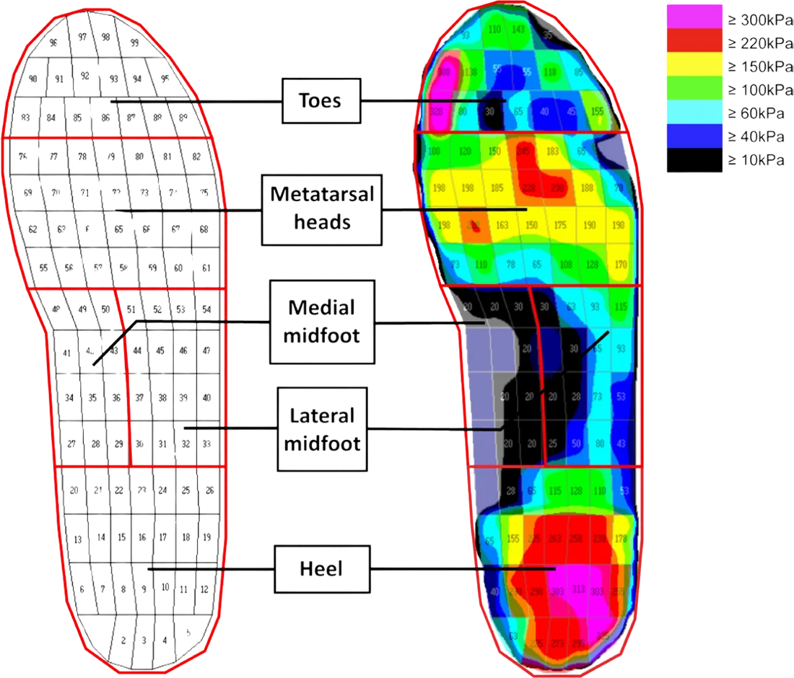
Pressure peaks under the heel and the first metatarsal heads, while the midfoot gets too little support. So the insole is split into zones, each with its own job: shock absorption at the heel, a firmer arch bridge, a metatarsal pad to spread push-off load, and soft, flexible toes.
A morphological analysis then settled the details. An adjustable elastic cord beat bow laces, Velcro and BOA for quick micro-adjustment as the height changes. A hollow transparent air-bag midsole beat a mortise-and-tenon rubber sole and a fully modular sole: it is visually light, cuts weight and still absorbs impact.
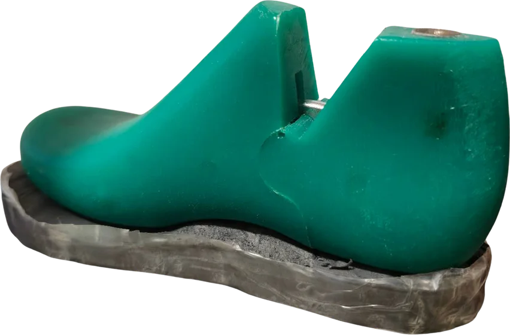
Heat vacuum forming over a last to get the upper’s shape quickly and accurately.
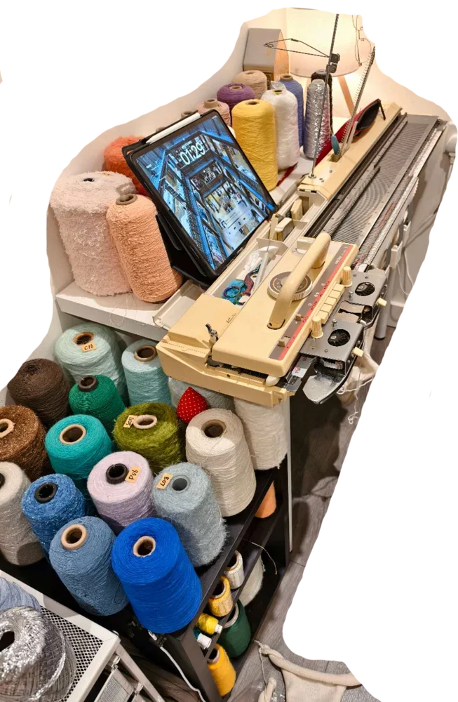
A UAL textiles student taught me the knitting machine, so I could test knitted uppers.
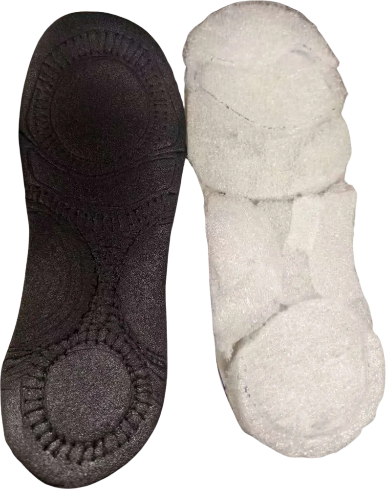
Hard foam shaped to the last, soft foam added by pressure zone, perforated where feet sweat.
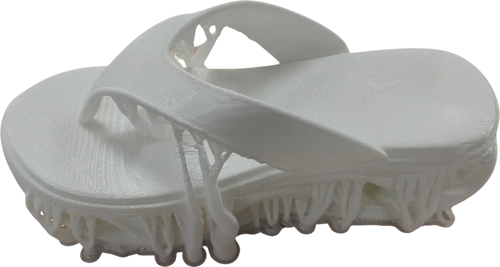
Printed as a sandal so I could actually walk on it and test rebound. A honeycomb version was too rigid, so the second uses airbags and a spine-like segmented join.
To check the insole, I estimated how much body weight each zone carries for a 50 kg wearer and matched a material stack and hardness to each.
| Zone | Load share | ≈ Force | Material (top → bottom) | Hardness / thickness |
|---|---|---|---|---|
| Z1 Heel core | 40% | 196 N | PU foam or soft EVA pad over the hollow airbag midsole | 20–30 Shore A 5–6 mm |
| Z2 Medial arch | 6% | 29 N | Thin soft top cover, firm EVA / TPU arch shell | 25–30 top, 45–55 core 2 mm top, 3–4 mm core |
| Z3 Lateral midfoot | 4% | 20 N | Soft top cover, medium EVA base | 30–35 Shore A 3–4 mm |
| Z4 Medial forefoot | 25% | 123 N | Soft EVA or PU met pad, medium EVA carrier | 20–25 pad, 30–35 carrier 3–4 mm each |
| Z5 Lateral forefoot | 15% | 74 N | Medium EVA for stability | 30–40 Shore A 4–5 mm |
| Z6 Hallux & toes | 10% | 49 N | Soft PU or low-density EVA, flex grooves | 20–30 Shore A 2–3 mm |





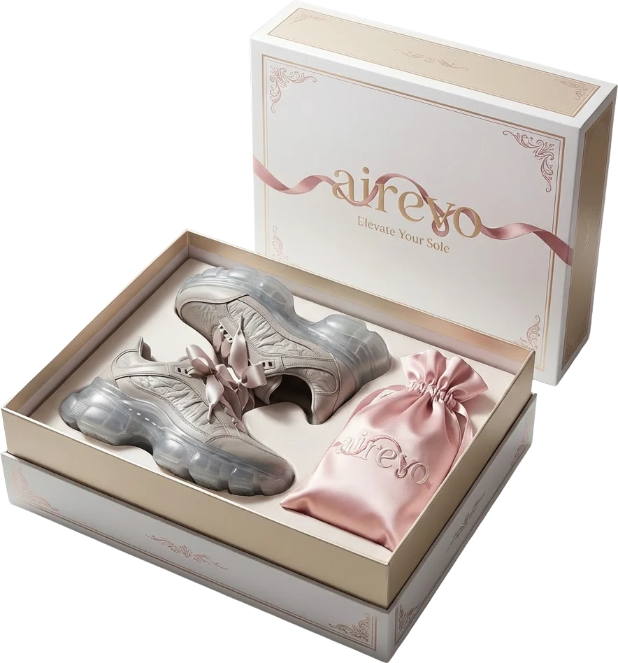
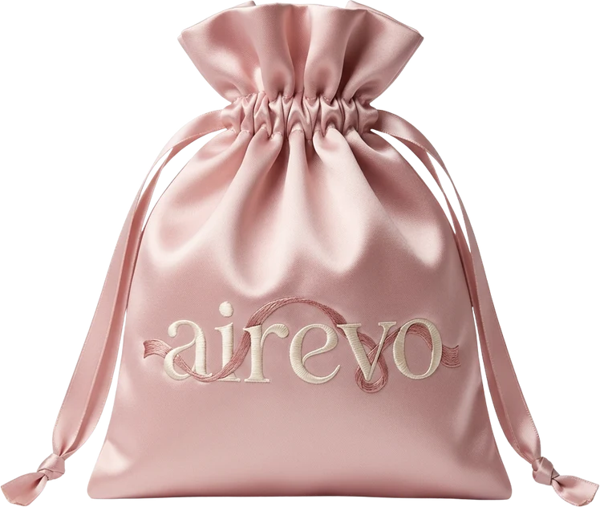
Lace limited edition
For winter season
Lace uppers with satin bow laces, on the same transparent platform. A seasonal edition keeps the brand feeling special and gift-worthy.
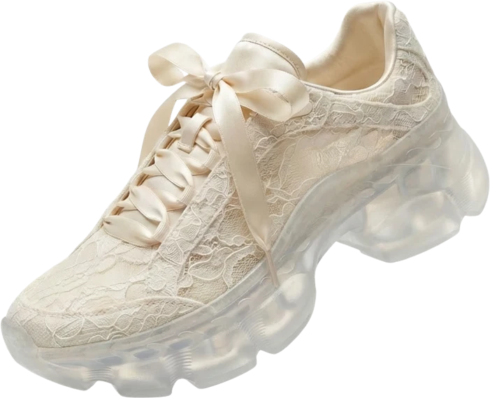
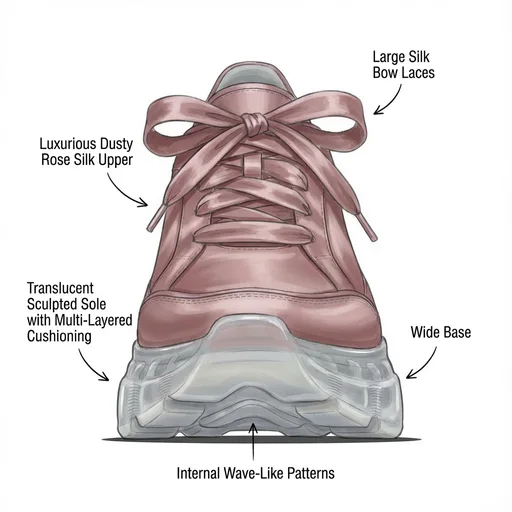
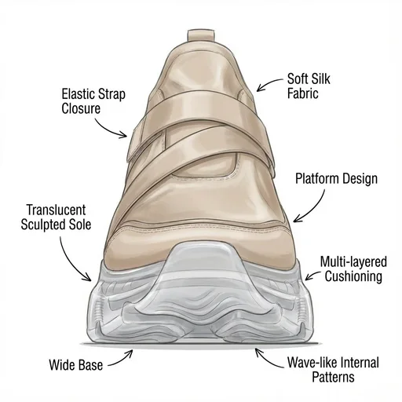
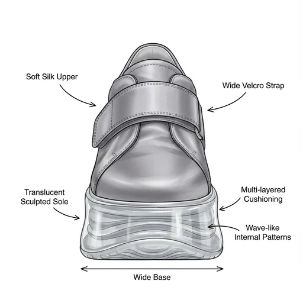
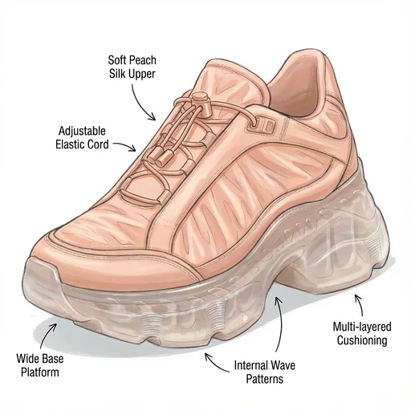
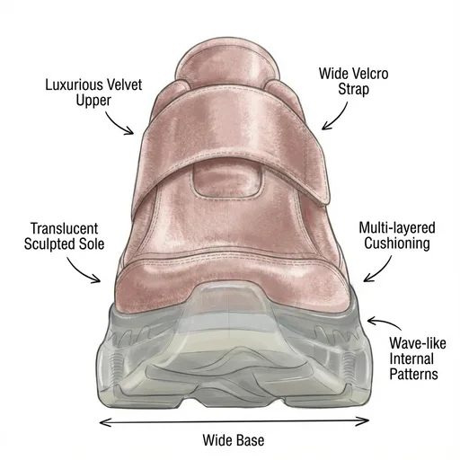
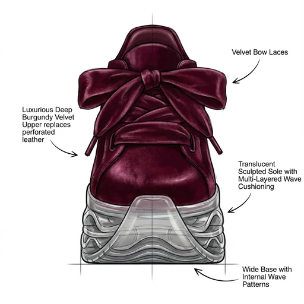
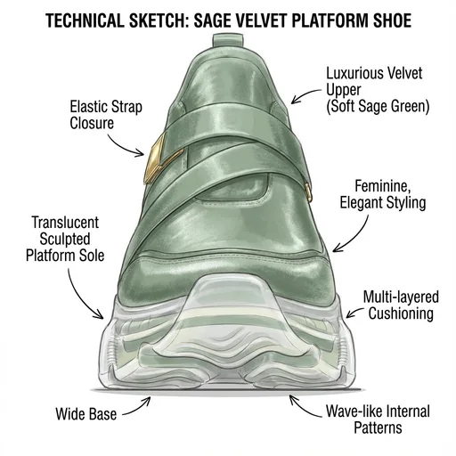
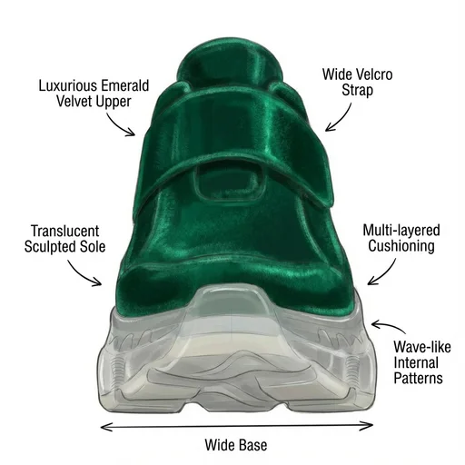
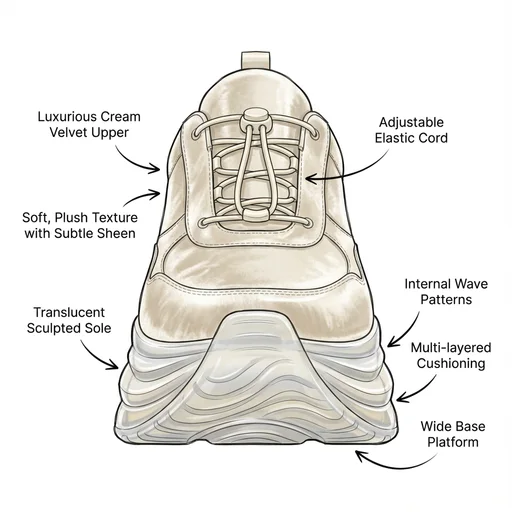
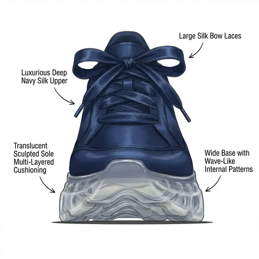